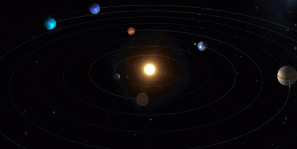

¿Que es el espacio?
En Astronomía, se denomina espacio (del latín «spatium«, que significa «todo lo que nos rodea»), espacio exterior o espacio vacío a todo lo que hay más
allá de la atmósfera terrestre y, en ocasiones, como sinónimo de universo (el adjetivo «exterior» se emplea para distinguirlo del espacio aéreo).
El espacio se puede clasificar, según sus características, en:
Espacio intergaláctico:
es el espacio físico entre galaxias. Generalmente sin polvo y escombros, el espacio intergaláctico está muy cerca del vacío total.
Algunas teorías suponen la densidad media del universo como el equivalente a un átomo de hidrógeno por metro cúbico. No obstante,
la densidad del universo claramente no es uniforme; varía desde una densidad relativamente alta en galaxias (incluso una densidad muy alta en estructuras
dentro de las mismas, como planetas, estrellas y agujeros negros) a condiciones de enormes vacíos cuya densidad es muy inferior a la media del universo.
La temperatura es tan sólo de 2,73 K.
Espacio interestelar:
es la región que media entre las estrellas y no debe confundirse con el espacio intergaláctico, mucho más vacío.
En general, el espacio interestelar suele estar poblado de grandes cantidades de polvo cósmico, aunque la densidad regional puede ser muy variable, en
función de la actividad de la zona.
Espacio interplanetario:
espacio exterior localizado dentro del Sistema Solar.
Espacio intracúmulo:
es el espacio físico que hay dentro de los cúmulos galácticos.

Pese a la denominación de espacio vacío, el espacio exterior no está completamente vacío de materia (es decir, no es un vacío perfecto) sino que contiene una baja
densidad de partículas, predominantemente gas hidrógeno, así como radiación electromagnética.
Aunque se supone que el espacio exterior ocupa prácticamente todo el volumen del universo (y durante mucho tiempo se consideró prácticamente vacío,
o repleto de una sustancia llamada éter), ahora se sabe que contiene la mayor parte de la materia del universo. Esta materia está formada por radiación electromagnética,
partículas cósmicas, neutrinos sin masa e incluso formas de materia no bien conocidas como la materia oscura y la energía oscura. De hecho, cada uno de estos
componentes contribuye al total de la materia en el universo, según estimaciones, en la siguiente proporción: materia condensada fría (0,03%), materia estelar (0,5%),
neutrinos (partículas sin masa, 0,3%), materia oscura (25%) y energía oscura (75%). La naturaleza física de estas últimas es aún apenas conocida, pues sólo se conocen
algunas de sus propiedades por los efectos gravitatorios que imprimen en el período de revolución de las galaxias, por un lado, y en la expansión acelerada del universo
(inflación cósmica), por otro.
No hay un límite claro entre la atmósfera terrestre y el espacio exterior, ya que la densidad de la atmósfera decrece gradualmente a medida que la altitud aumenta.
No obstante, la Federación Aeronáutica Internacional ha establecido la línea de Kármán a una altitud de 100 kilómetros como una definición de trabajo para el límite
entre la atmósfera (en su definición clásica) y el espacio. Esto se usa porque, como Theodore von Kármán calculó, por encima de una altitud de unos 100 km, un vehículo
típico tendría que viajar más rápido que la velocidad orbital para poder obtener suficiente sustentación aerodinámica para sostenerse él mismo.